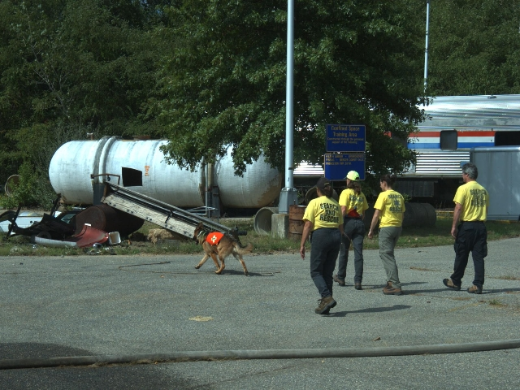

Notes:
Where did that search task go? In search and rescue operations, task teams go out to search assigned areas and follow trails. The command post would like to know where each task team is are and exactly what ground it has covered.
This image is of a Greater Philadelphia Search and Rescue task team training in an air scenting task with Lucas at the Dempster fire academy.